| 個 人照 | |
| 1
號 何祖緖 興趣：研究數學 |
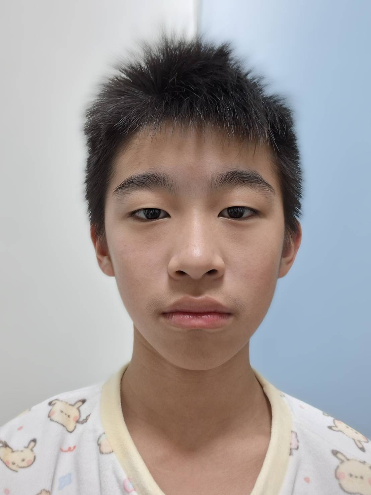 |
| 2
號 趙晨佑 興趣：玩遊戲 |
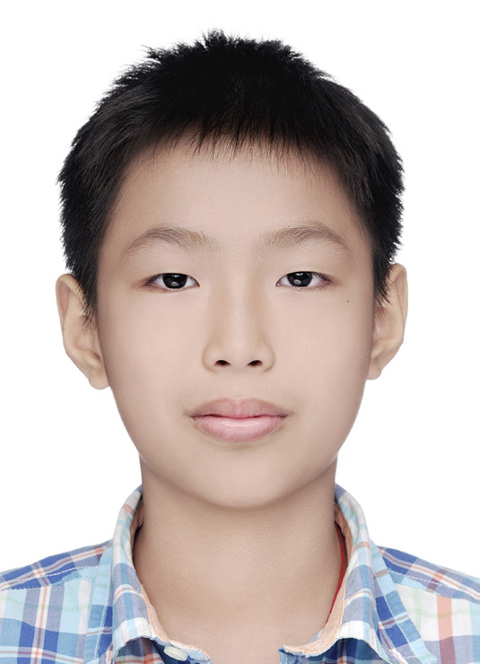 |
| 3
號 劉丞恩 興趣： |
|
| 4
號
王子鴻 興趣：打球 |
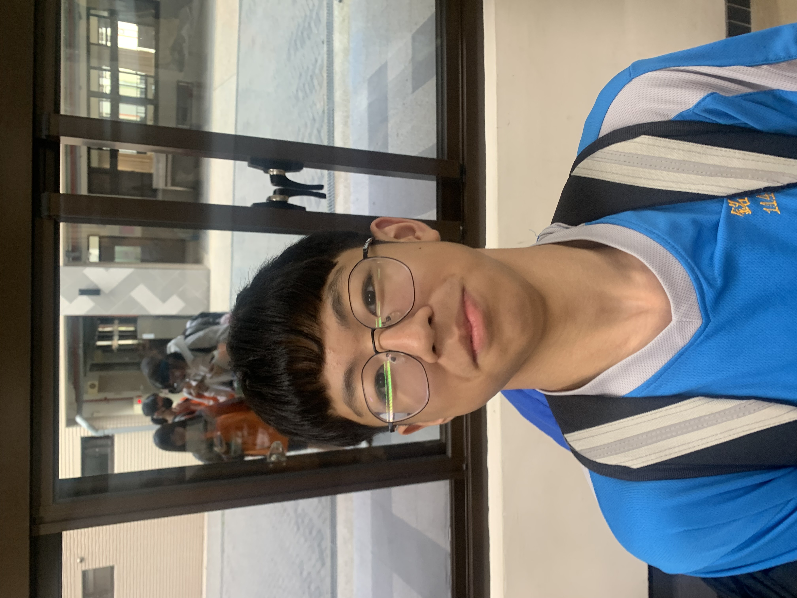 |
| 5
號 林丞晞 興趣：打棒球 |
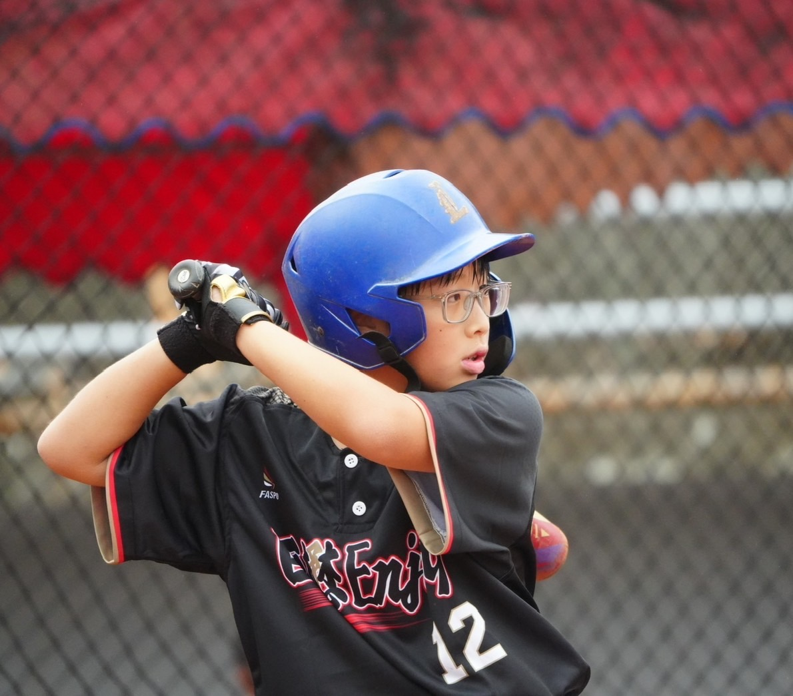 |
| 6
號 林楷諺 興趣：玩手機 |
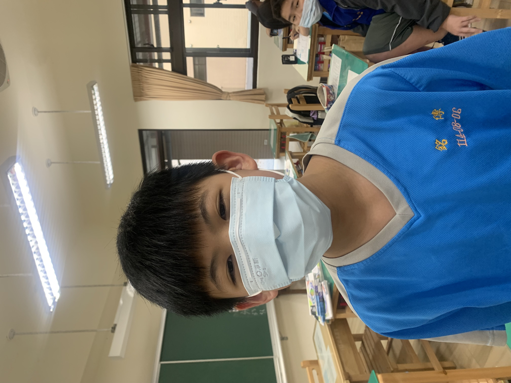 |
| 7
號 施衡佑 興趣：看棒球 |
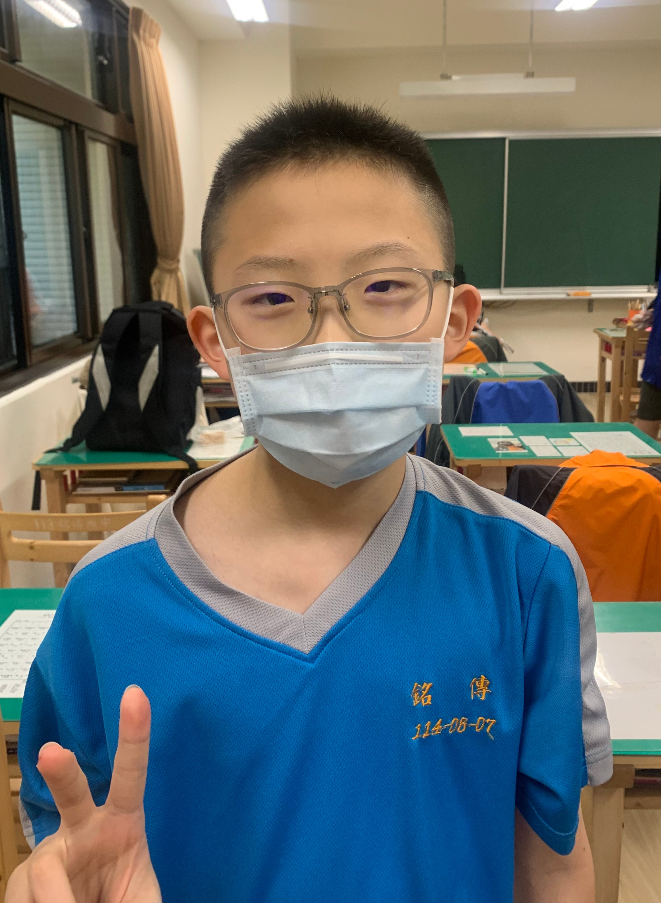 |
| 8
號 馬瑀緜 興趣：打球 |
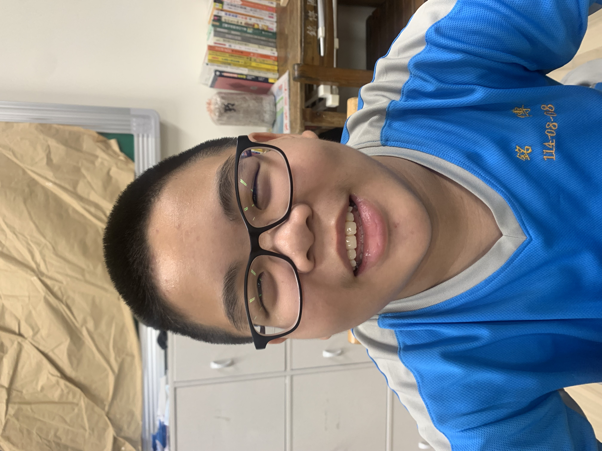 |
| 9
號 高銘陽 興趣：打籃球 |
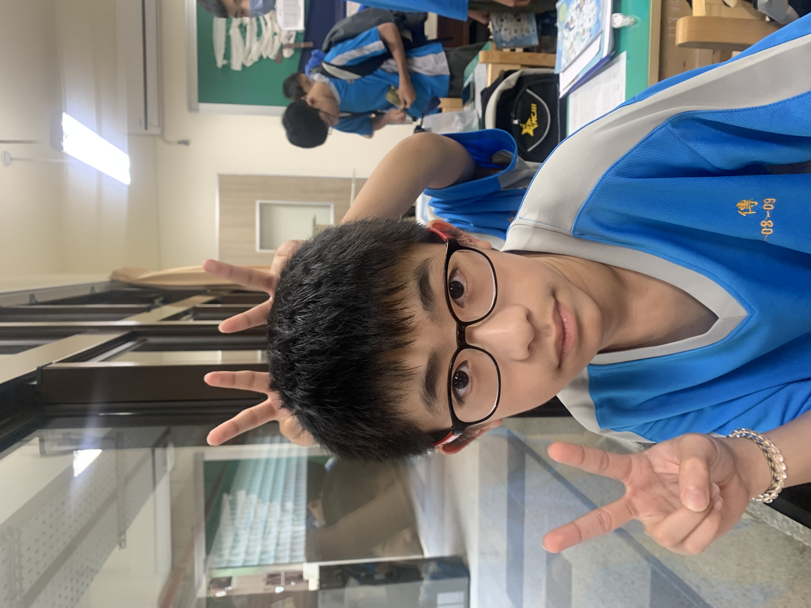 |
| 10
號 郭晏誠 興趣：打籃球 |
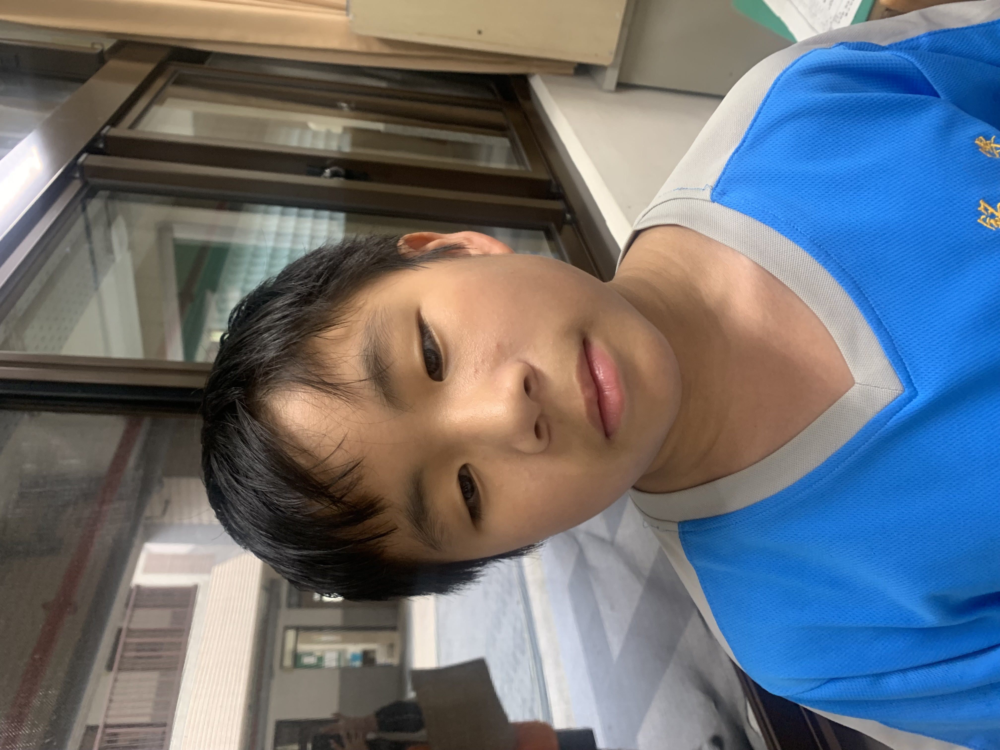 |
| 11
號 陳詠恩 興趣：笑 |
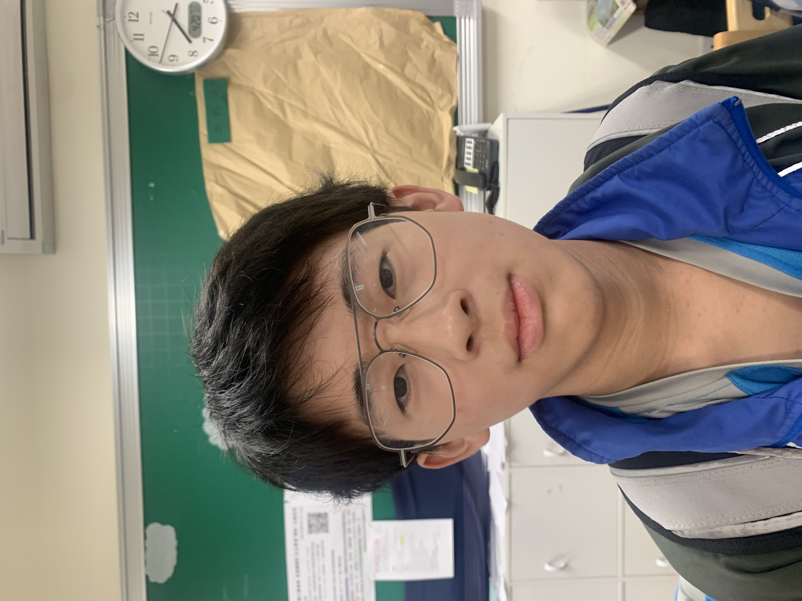 |
| 12
號 賴彥愷 興趣：玩手機 |
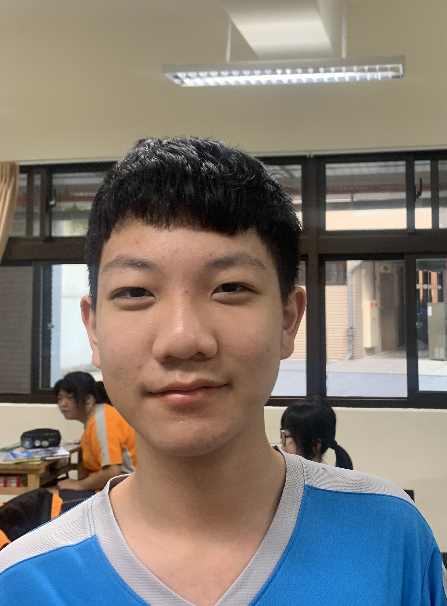 |
| 13
號 鍾定恩 興趣：玩手機 |
|
| 14
號 謝叢亦 興趣：玩手機 |
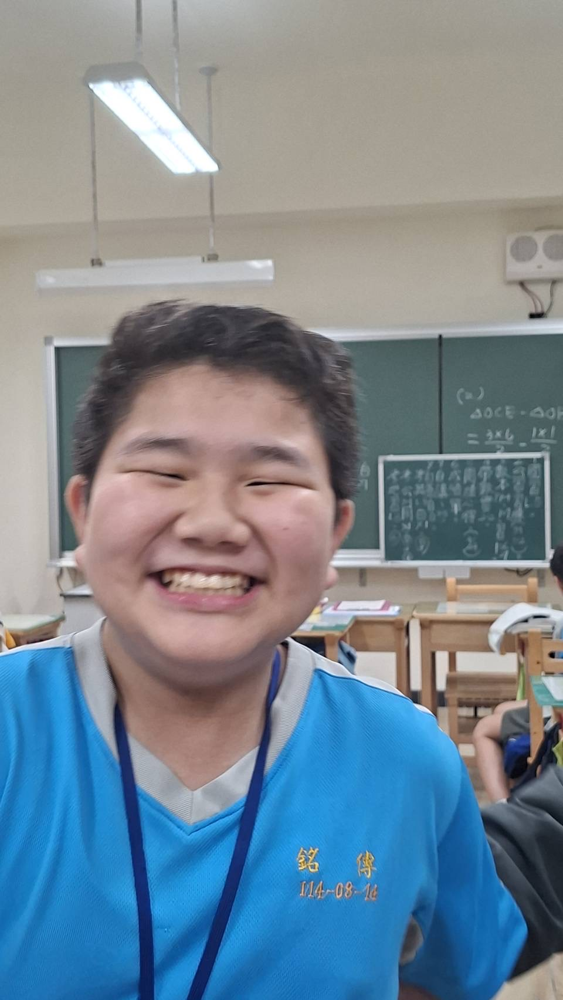 |
| 15
號 簡佑鈞 興趣：打球 |
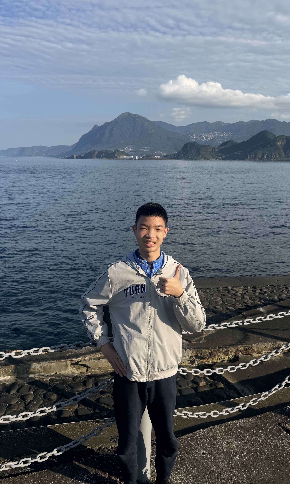 |